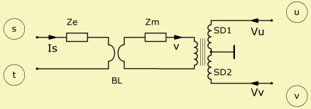

The electro-dynamic driver is documented by following chapters
The electro-dynamic driver is documented by following chapters|
 |
| Purpose | Electro-dynamic loudspeaker driver |
| Domain | Electric - acoustic |
| Used in | Definition part |
| See also | Driver |
Def_Driver "Any Name"
fs=
Mms=
Cms=
Kms=
Rms=
Qms=
Lamda=
|
BL=
Qes=
Re=
Le=
ExpoLe=
ExpoRe=
fre=
Re2=
Le2=
|
dD=
SD=
WD=; HD=
dD1=
SD1=
Elliptical
|
Def_Driver defines an electro-dynamic driver with one voice-coil. It is referenced by the four-pole network-element Driver.
The electro-dynamic driver is documented by following chapters
The combination of Def_Driver - Driver forms a practical component, which encapsulates basic lumped elements as demonstrated in example Components.
Def_Driver can be used with multiple Driver components. In this combination Def_Driver specifies the parameters and Driver the network wiring. See further example at Boundary Element with Def_Driver.
This example is taken from example:
/Loudspeakers/45Tower - BEM Exterior/
 It models a complete 2-way loudspeaker system, with 4 woofers and a horn as tweeter.
Included is also a passive cross-over. In this version we modeled the
exterior with the help of BEM and the interior acoustics with the help of
Duct components. See sketch below.
It models a complete 2-way loudspeaker system, with 4 woofers and a horn as tweeter.
Included is also a passive cross-over. In this version we modeled the
exterior with the help of BEM and the interior acoustics with the help of
Duct components. See sketch below.
This example demonstrates assignment of diaphragms. In System 'Woofers' all diaphragm specification is done in the associated BEM-script. The rear of the diaphragm is automatically assigned the same diaphragm-area as the front (case (3.1) in chapter Lumped Element Diaphragms). In System 'Tweeter', on the other hand, the BEM starts with the outlet of the compression driver, which is not the diaphragm of the tweeter-driver. Hence, we have case (4) in chapter Lumped Element Diaphragms where the diaphragm of the driver is not part of the BEM-system.
Def_Driver 'W1'
// Generator resistance at measurement Rg=0.6ohm, mass estimated
Re=6ohm Le=0.545mH
fre=9.106kHz ExpoRe=1.258 ExpoLe=0.734
Mms=5.77g Cms=1.576e-3m/N Rms=1.141Ns/m Bl=4.13N/A
// fs=52.778Hz Qms=1.677 Qes=0.673
Def_Driver 'T1'
dD=35mm // Diameter of diaphragm
Re=4.7ohm Le=0.046mH
fre=4.3kHz ExpoRe=0.22 ExpoLe=0.379
Mms=1000mg fs=1.95kHz Rms=7Ns/m Bl=6.5N/A
Def_Driving
Value={ dB(-15 + 6) }
IsRms
System 'Woofers'
...
// Transducers
Driver "Drv1" Def='W1' Node=10=20=101=201 DrvGroup=1001 // Top
Driver "Drv2" Def='W1' Node=10=20=102=202 DrvGroup=1002
Driver "Drv3" Def='W1' Node=20=0=103=203 DrvGroup=1003
Driver "Drv4" Def='W1' Node=20=0=104=204 DrvGroup=1004
// Radiation impedance front diaphragm
RadImp "F1" Node=101 DrvGroup=1001
RadImp "F2" Node=102 DrvGroup=1002
RadImp "F3" Node=103 DrvGroup=1003
RadImp "F4" Node=104 DrvGroup=1004
...
System "Tweeter"
...
Driver "Drv5"
Def='T1'
Node=50=0=100=0
// Compression chamber of height H.
// Modelled with the help of an acoustical compliance. Mass ignored.
// Using inline-formula. Value of last formula gets assigned to Vb=.
Enclosure 'Ef'
Node=100
Vb={ dD=35e-3; H=0.2e-3; SD=pi*sqr(dD/2); Vb=SD*H }
// Phase-plug between compression chamber and horn-stub.
// Normally phase-plugs are a complicated system of slits.
// Here we simplify by lumping all pathes into a single waveguide.
// Note that Waveguide provides modal response along the waveguide.
Waveguide 'W1'
Node=100=300
STh={ dD=35e-3; SD=pi*sqr(dD/2); r=0.8; STh=(1 - r)*SD }
dMo=1in
Len=45mm
Conical
// Radiation impedance horn throat
RadImp "HTh"
Node=300
DrvGroup=1005 // Outlet of compression driver

System 'Woofer'

System 'Tweeter'